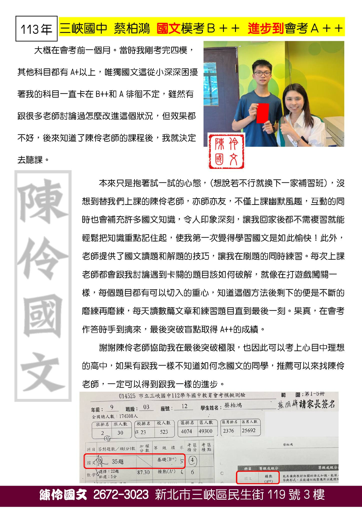

解構古文美學，精準掌握閱讀素養關鍵
深耕高中學測 × 國中會考 × 三峽在地教學
領略文學之美
為什麼選擇陳伶國文？
陳伶國文主要深耕高中學測與國中會考，致力將枯燥的國文轉化為趣味的加分科目。強調透過邏輯思考、基礎能力強化，取代傳統死背題型，幫助學生建立系統化的國文思維。
打底而非衝刺
從根本建立能力，降低學習枯燥感，解決國文與時代脫節的困境。
邏輯取代死背
培養邏輯思考，透過內容與實際情境的連結，提升閱讀理解力。
古文趣味化
將艱深國學常識轉化為有趣故事，結合生活化素材加深記憶。
系統化思維
建立完整的國文學習架構，讓每個知識點都有脈絡可循。
涵蓋學測・會考・素養全方位
親身經歷，成績說話

蔡柏鴻同學
國文從模考 B++ 進步到會考 A++。每次上課老師都會跟我討論遇到卡關的題目，就像在打遊戲闖關一樣，最後突破盲點取得佳績。
林書浩同學
國文從 B 一路進步到 A++。每週從大溪到三峽上現場課，段考從 70~80 分衝上 90 分，最終會考拿下 A++ 高分。
凡是具備以上任一項狀況，請來陳伶國文尋找最佳解答！
新北市三峽區民生街 119 號 3 樓